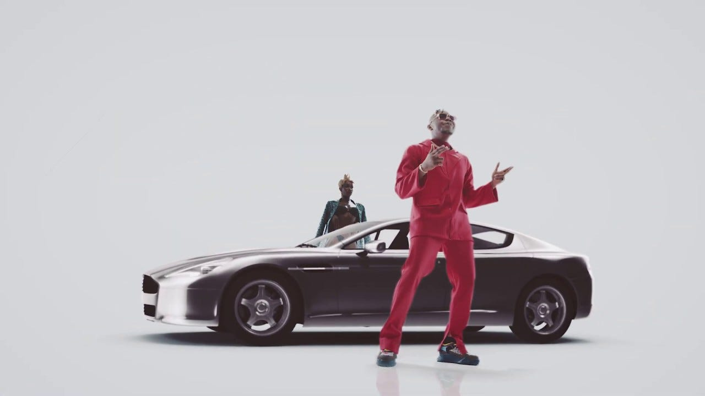
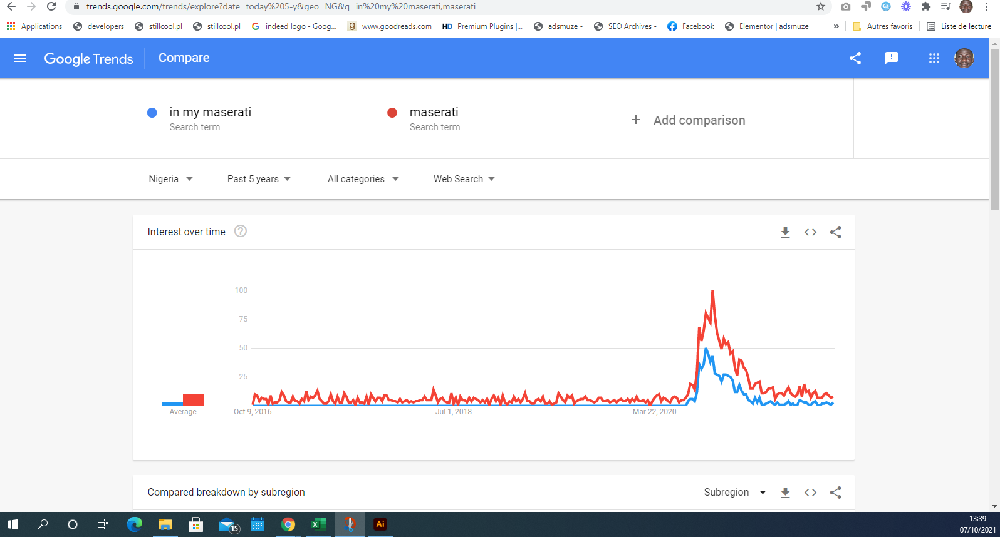
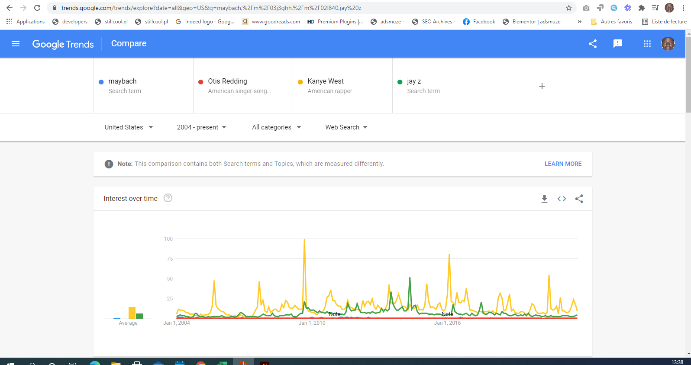

Brands in musical hits


Today I have had the luck to spot a clear example of what I used to explain here about how awareness spreads from one entity to another entity like the transfer of attention from a particular field to another one due to a single or a set of signals. In the example that I will be providing, the signal is a brand name and the field which also can be taken as the medium from which the signal comes from is music and recall
The web is like a farm that’s why since the early days of the internet webmaster like you and me used to say my farm of websites and even networks and system administrators like you and me extended the term to identify a data center or a cluster of computers as a farm of servers. With a farm, we only harvest what we have seed and like how fertilizers improve the production of an agricultural field the web also has its set of fertilizers that have been imagined and built by devoted computer scientists like you and me and there are
I am not a music enthusiast meaning that a hit can be known by millions of people before it reaches my ears. That’s what happened with this title below
but once I have listened to it I reminded myself how songs about a particular brand increase the awareness of this brand because this title is directly referring to a brand of car which is Maserati. I decided to spot the impact of this title on the level of awareness of the Maserati and here is what I have discovered.

In Nigeria Maserati has had a period of increase of awareness due to this sound but I don't know if this awareness benefited financially to the brand because I am not sure that there are many people able to buy this expensive type of car in this country. Bu the pattern is here and you can source any other kind of pattern like this one. Musical hits which make reference to a brand or whose video clip involves a particular brand have all the same effect of increasing the level of awareness of the referenced brand and there are a lot of musical hits like this.
Brands are getting more than artists because artists wake up a day and decide to sing about a brand giving it more exposure for free.
Also, I wanted to show you how the awareness of singers is correlated when they decide to produce a title in featuring. You can see this example with JayZ and Kayne West.
